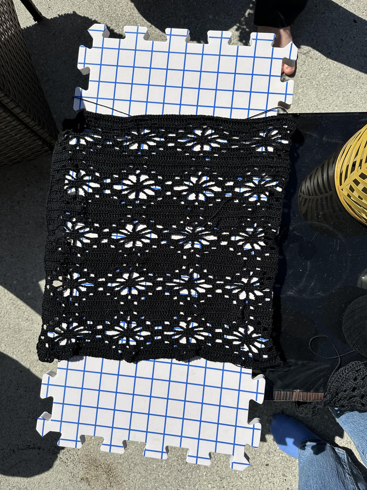
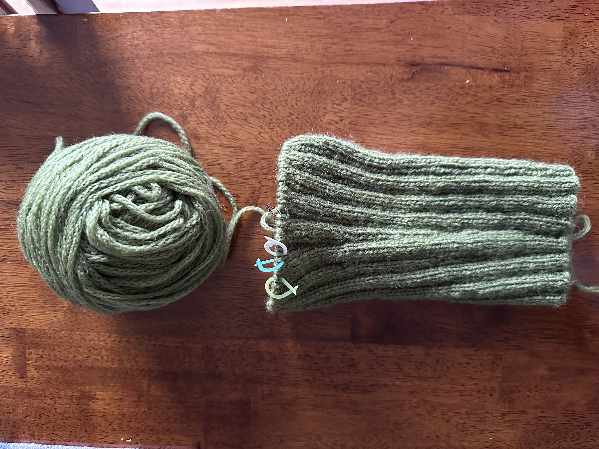
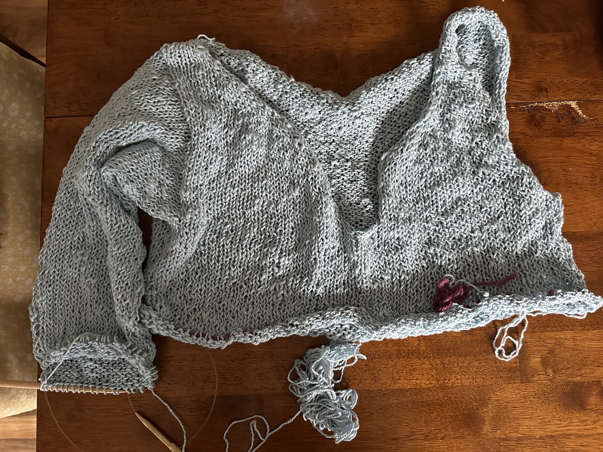

My current w.i.p.'s!
(Works in Progress)
Flower Top
This is my current crochet project. It is this pattern . I've made this pattern before as one of my first projects. I'm really enjoying working on this right now and almost have the pattern memorized. This picture is the front panel to the sweater and it was out drying after blocking. I started this project around March 1st and I've still got a bit to go. The flower pattern can work up fast, but I've had to focus on school work more recently. The yarn I'm using for this sweater is just 100% cotton. It's the brand Aunt Lydia's, Fashion3 yarn in black.
Ribbed Sleeves
This is the very beginnings of a bolero style top. The pattern is the Ribbed Sleeves pattern by Wool and Beyond. What drew me to this pattern was that it's worked from one wrist to the other. So, it's sort of worked horizontally rather than the traditional vertical construction of knitted garments. I started these sleeves around February 13th and as you can see I've barely made any progress. This pattern turned out to be a little more involved than I thought because of all of the increases for the sleeves. I casted this project on mostly because I was in a knitting rut after Christmas and making a bunch of handmade things for my friends and family, and I wanted to use this yarn. So I'm not necessarily excited about having these sleeves since I don't really know how I would style them when finished. The yarn I'm using for this project is Vidalana ascendance by Knitcrate in the shade fatigue green. It is 100% Peruvian wool and a chainette construction. It's pretty soft and I love the color.
Blue Top
This is a top that I started right when the weather was getting warm. I can't remember the date, but I have been wanting to use this yarn for a while. I thrifted this yarn two years ago in a craft thrift store called The Scrap Exchange in Durham, NC. I know it's 100% Egyptian cotton, and it's spun to have varying thickness throughout the yarn, so there's some parts of the top that are more sparse than other parts. I was heavily inspired by seeing sweaters online that had this varying sparseness for a more summer, relaxed vibe. So, I made a gauge swatch and started knitting the body. I decided to do a drop shoulder construction for the oversized look, and because that's probably my favorite way to knit sweaters at the moment. I also decided to add a little dip in the front section that's going to have a button to add some extra detail to this top. Currently, I'm knitting on the first sleeve. I had to rip back and redo the sleeve, adding decreases this time, because the sleeve ended up being a little too wide. This usually wouldn't bother me except I only have a limited amount of this yarn, and since it was thrifted, I don't know if I'd be able to find any more of it (I also just don't want to buy anymore yarn lol). As you can see in the picture, I have the body on hold and it's very cropped. That's just because I wanted to finish both the sleeves and make sure I had enough yarn for that first. I would prefer to have more of a cropped body, but full length sleeves than sleeves that are awkwardly too short. But, I've been more in the mood to crochet recently so that crochet flower sweater has been what I've mostly been working on. Plus, since I'm just knitting the sleeve, it's getting pretty boring for me to just knit in the round forever. But I'm hoping to finish this soon and be able to wear it to the beach when it gets warm enough!